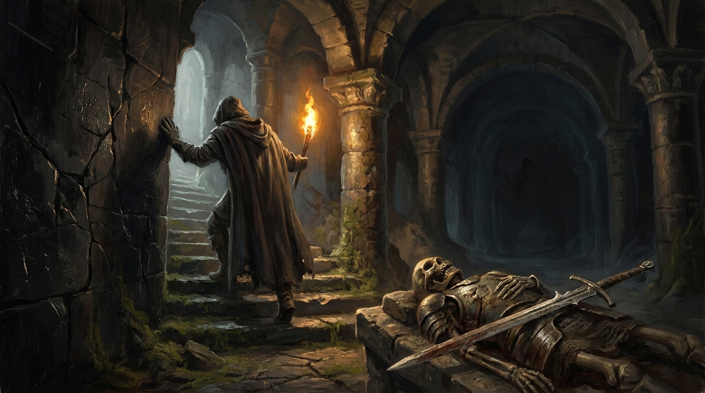
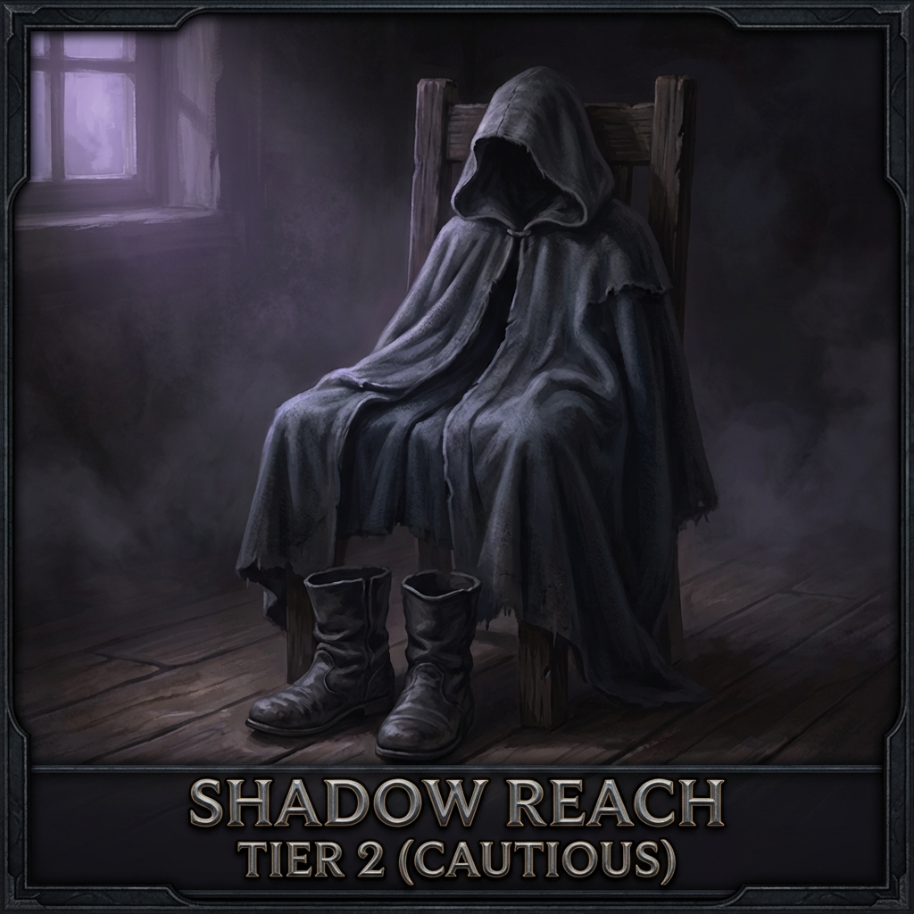
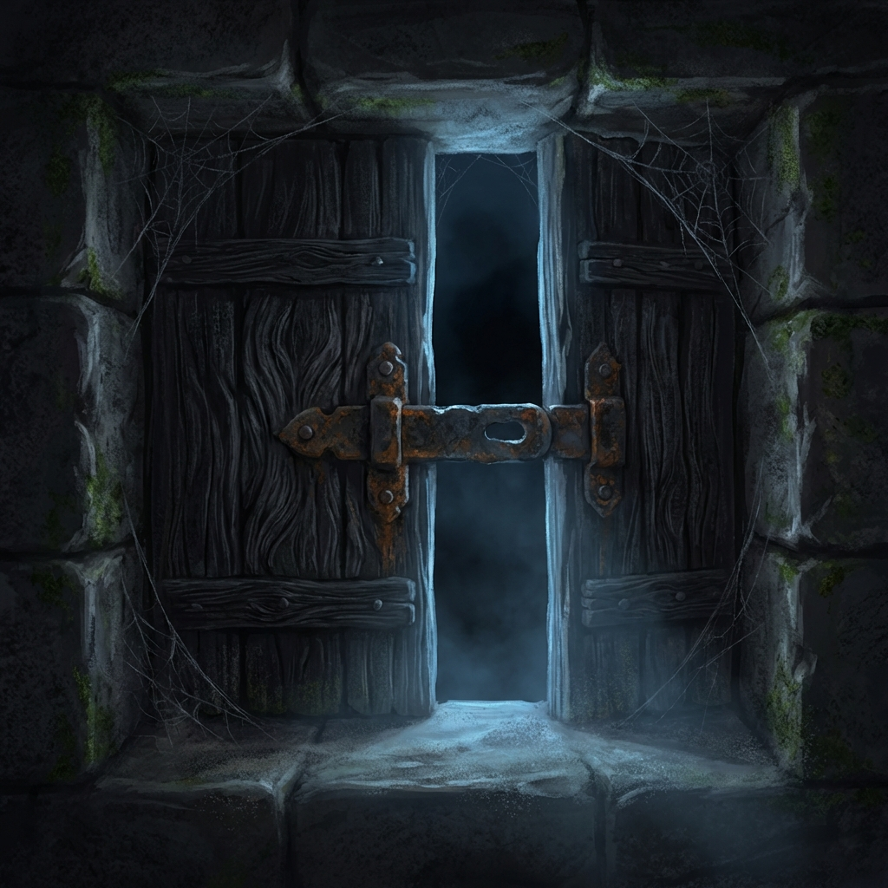
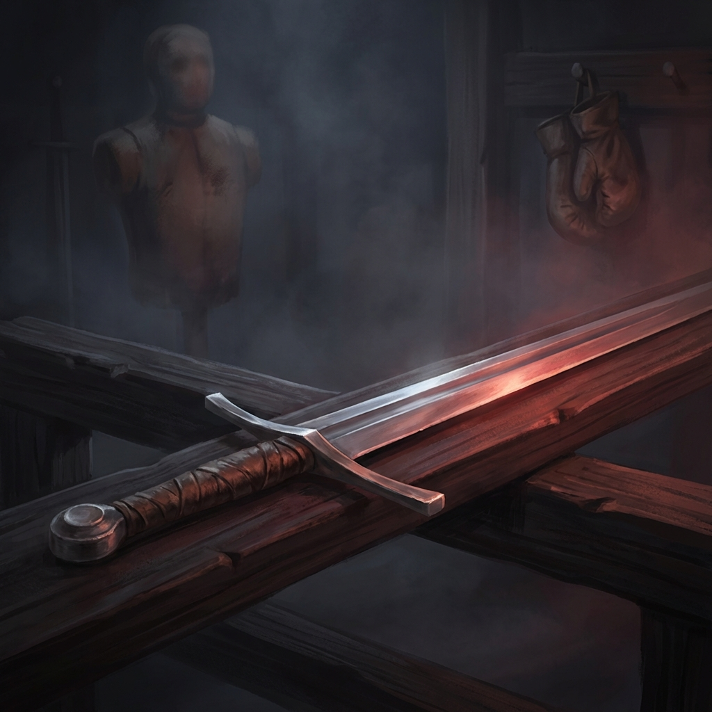
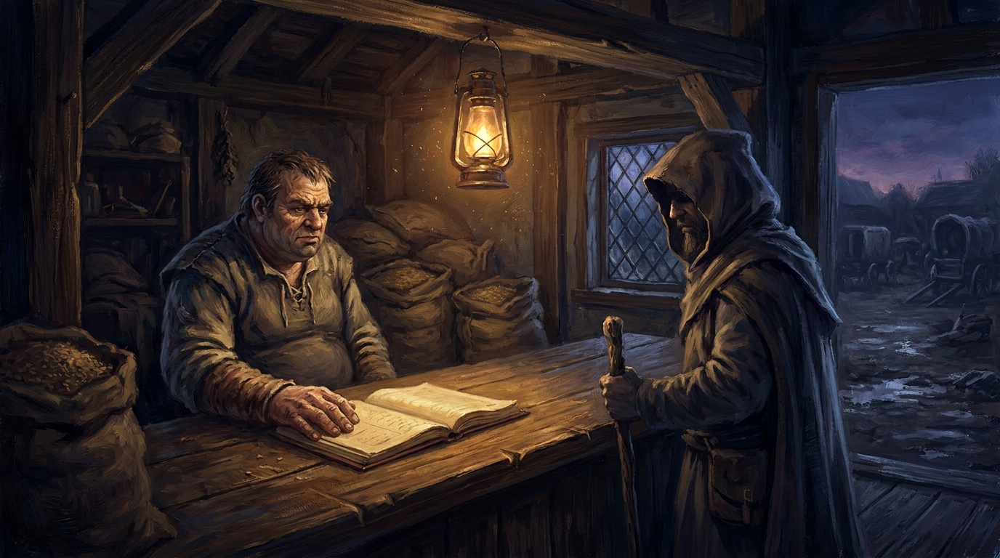
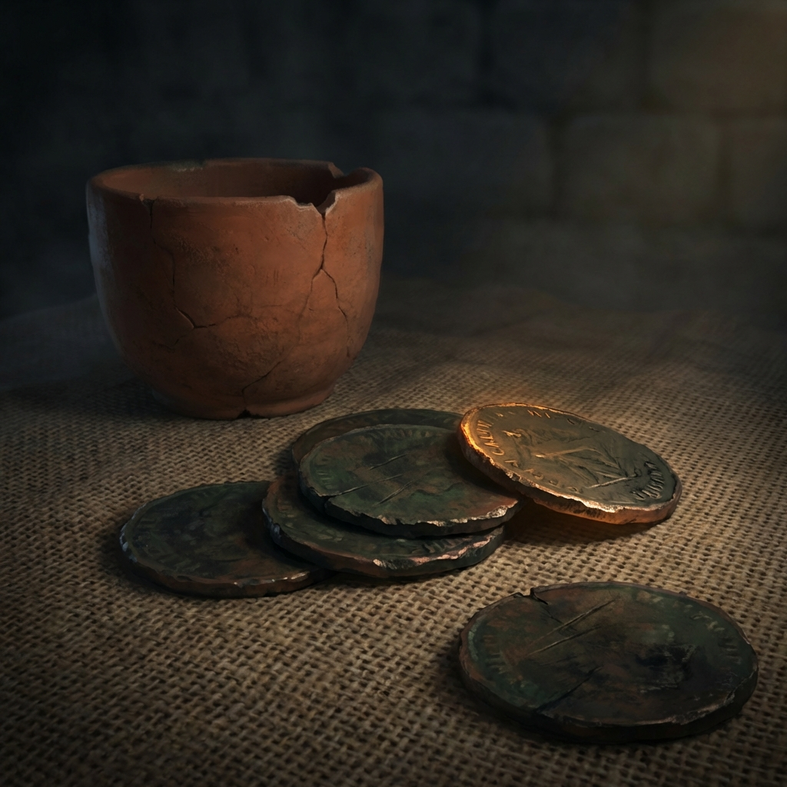
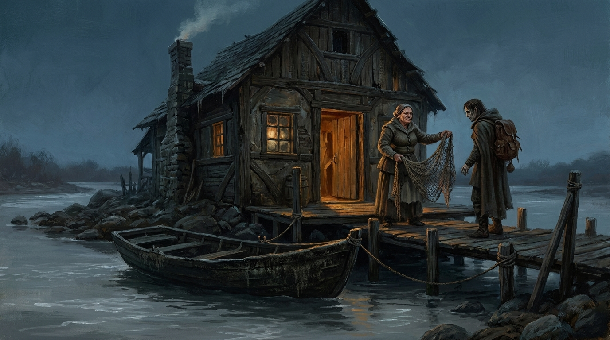
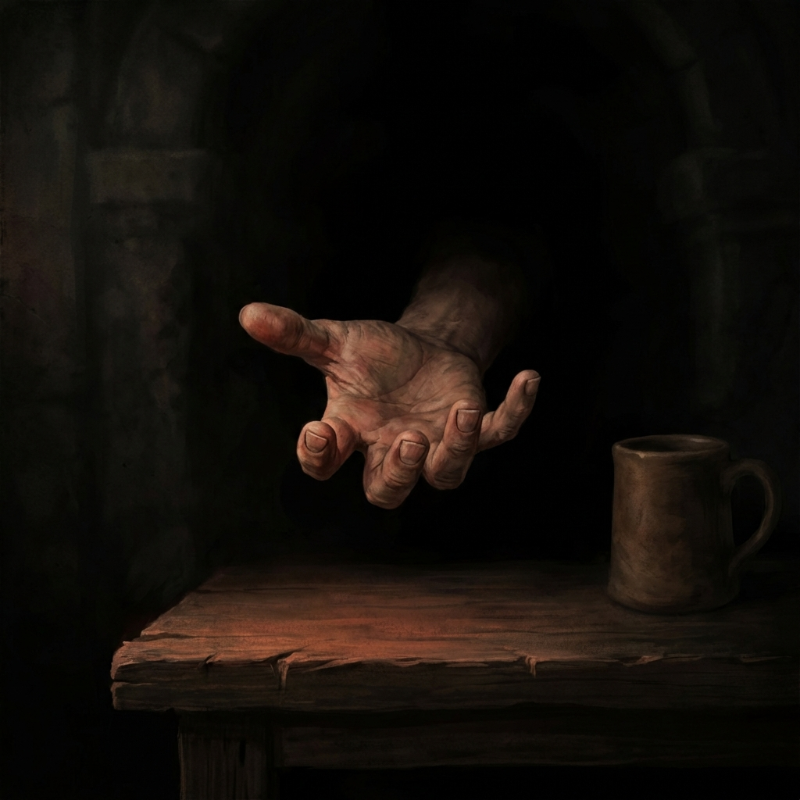

The Nudge Model — three encounters, full flow v3

I · The Darkhollow Vault
god of MIND + ENTROPYDusk. Kael slips through the fallen gate of the Darkhollow, where the sword of Mufasa was sealed in the vault with its last bearer. The things below wake at full dark. The search must be quiet, and it must be fast.

Shadow IImove unseen

Eye Ifind the vault Forecast:
- −The Darkhollow is deep, and older than its maps
- −The sleepers below wake at full dark
- +Dusk still holds — a thin margin of quiet
The sword is heavier than its size; old iron drinks the torchlight. Between Kael and the gate: the long gallery, and whatever the hinge woke.
slip out

Iron IIcarry the blade Forecast:
- −The hinge was heard; the dark is moving
- −The blade is heavy, and wants carrying
- +The way is known now — every turning walked once

II · The Grain Factor
god of MIND + ENTROPYThe grain factor Oswin Pell keeps his ledger open on the counter the way other men keep dogs — teeth showing. Kael needs four wagons of winter grain for Halden's Ferry, and Pell's asking price would empty the village that eats it.

Gold Istrike the deal Forecast:
- −Pell haggles for a living, and his ledger is his home ground
- +#trustworthy — Kael's word is known on this river
- +The errand is honest, and reads that way

III · The Long Way Back
quintessence rebuilding · slow by designA broken mortal cannot be commanded whole. The rebuilding encounters are theirs to walk — a few roads per Reach, each giving quintessence back slowly. The god picks the road and keeps the weather kind.
Marta Weir still keeps the ferry house, and still owes Kael for the winter of the broken oar. She asks nothing about the Darkhollow. She hands over a net that wants mending.

Heart Ilet people close Forecast:
- +Marta owes the winter of the broken oar
- +Nothing here wants anything from Kael
- −The Darkhollow is still close under the skin
Rekindle the Thread
The god pours their own fire back into a broken mortal, all at once. The mortal wakes whole — and knows exactly whose fire is in them now.